| ・ 紅葉狩り (H29.11.13) | |||
去年は大原でしたが，今年はいつもの曼殊院へ．M1有志で徒歩移動です．だいたい30分ほどで着くのですが，ヒール的なのはしんどいとのこと．運動靴は研究室に置いておいて下さい． |
|||
|
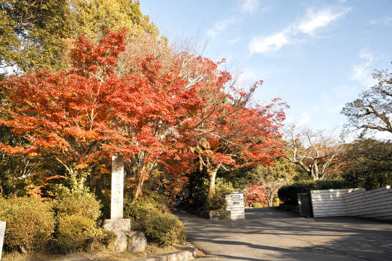
良い感じに |
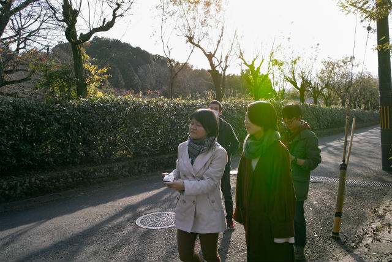
寒くも暑くもなく | ||
|
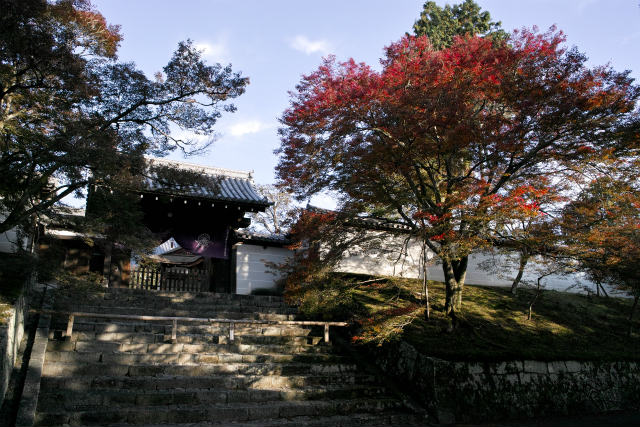
今週が見納めかも |
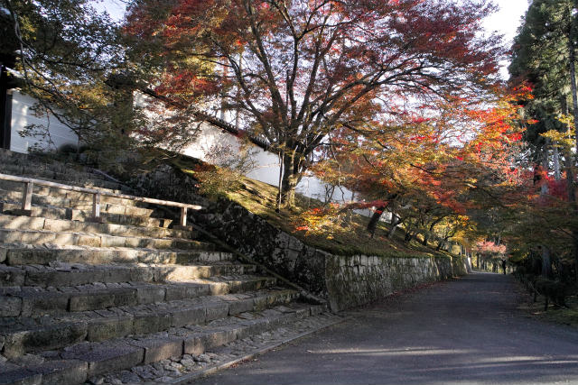
色はいいね | ||
|
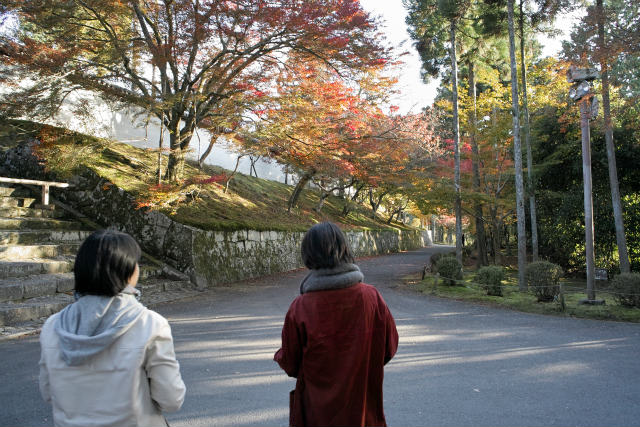
奥からが見栄えするよ |
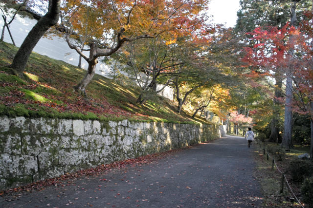
ダッシュ | ||
|
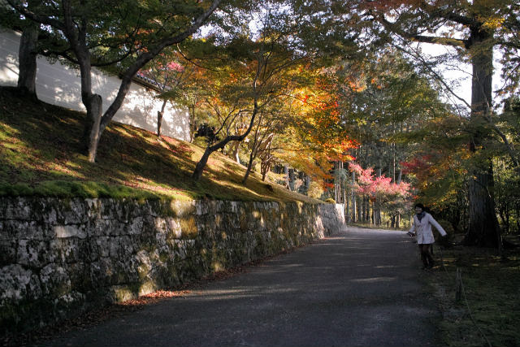
たのしそう |
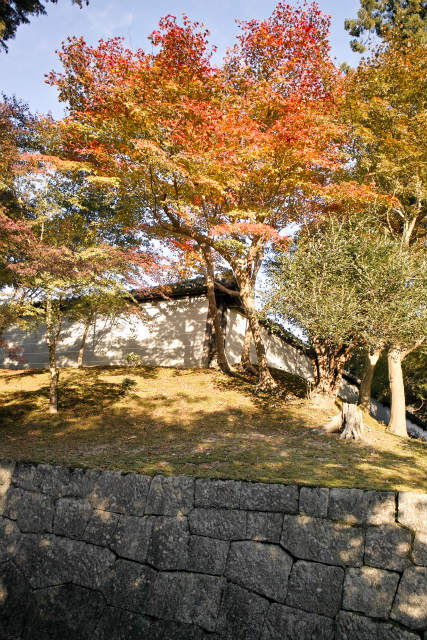
白壁を入れたり | ||
|
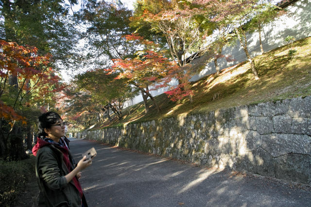
石垣とか |
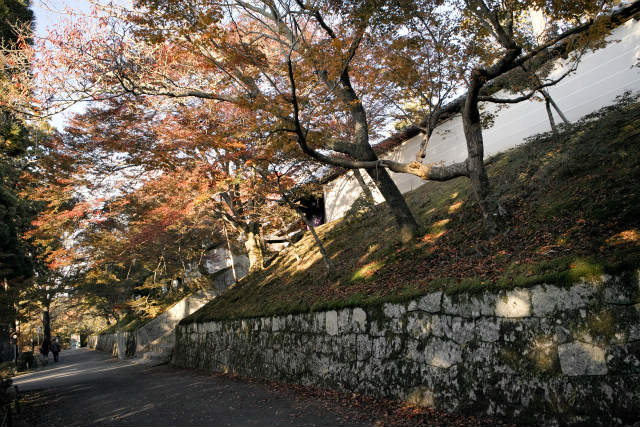
構図はいろいろ | ||
|
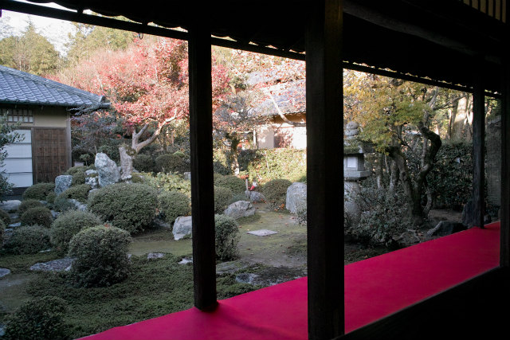
集中講義を活かすチャンス |
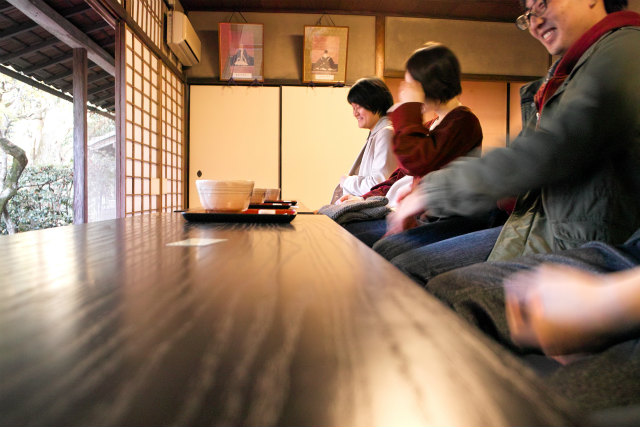
どっちまわすの | ||
|
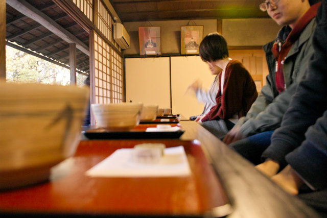
rotが負の方向 |
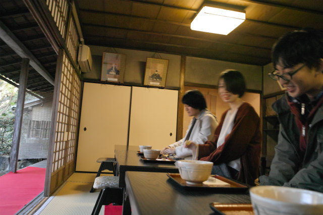
そんなことより小豆が | ||
|
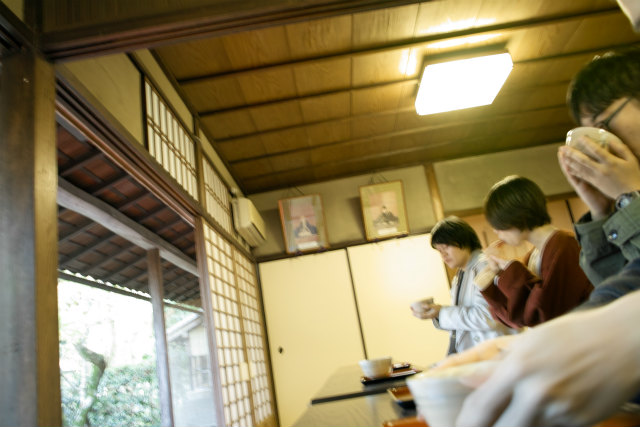
ぐっと |
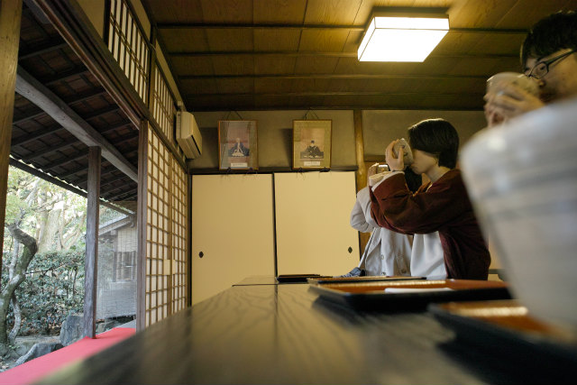
良いお点前でした | ||
|
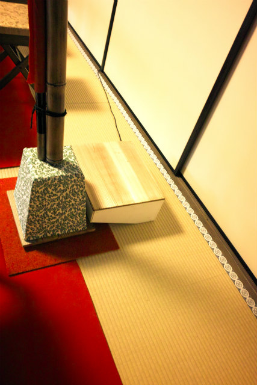
音響インピーダンス的にどうなの |
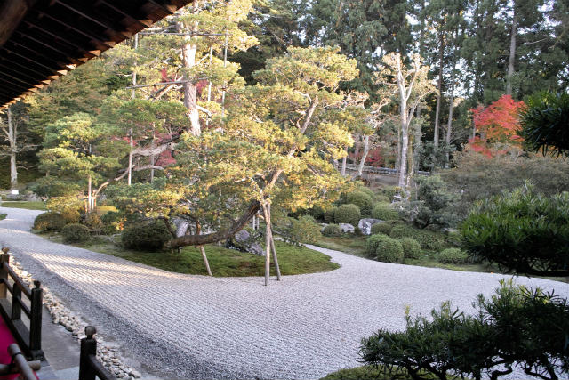
庭 | ||
|
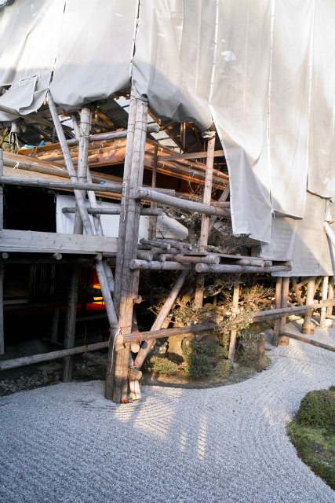
工事してるけどこれは珍しい |
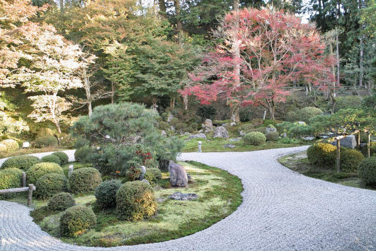
立って見るより | ||
|
座って見よう |
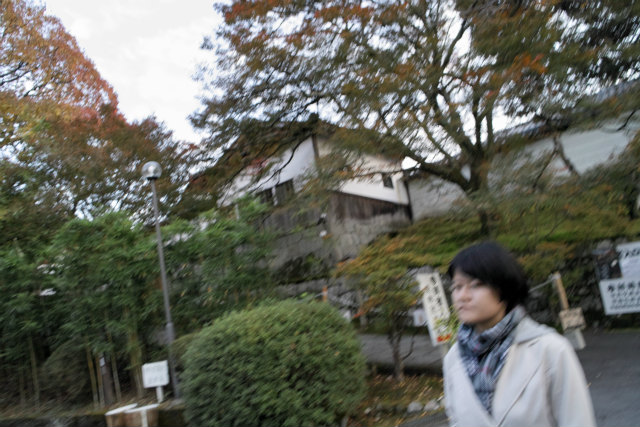
ぼちぼち帰りです | ||